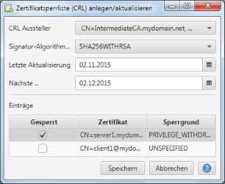

Zertifkatsperrliste (CRL) anlegen/aktualisieren
Mittels diesen Dialogs können Zertifikatsperrlisten (CRL) angelegt und aktualisiert werden. Dabei geht die
Anwendung davon aus, daß das ausstellende Zertifikat jeweils immer auch der Unterzeichner der Zertifikatsperrliste
ist. Im Dialog kann daher genau der Sperrstatus für alle durch das ausgewählte Zertifikat ausgestellten
Zertifikate gepflegt werden.

Im oberen Teil des Dialogs werden der Signatur-Algorithmus sowie die Datums-Parameter der Zertifikatsperrliste (Letzte
Aktualisierung und Nächste Aktualisierung) gepflegt. Im unteren Teil des Dialogs zeigt die ausgestellten
Zertifikate mit ihrem aktuellen Sperrstatus an. Letztere können nach Bedarf angepasst werden.